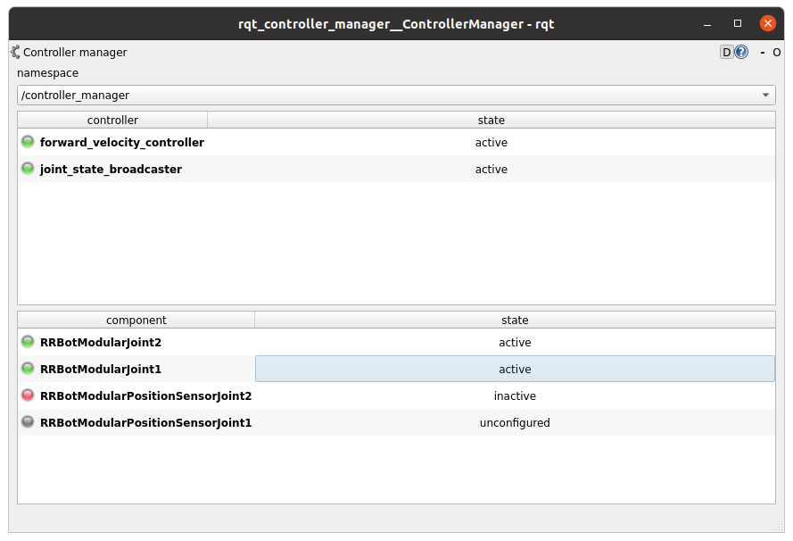
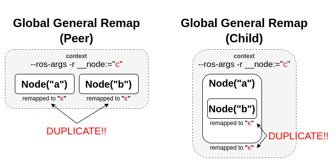
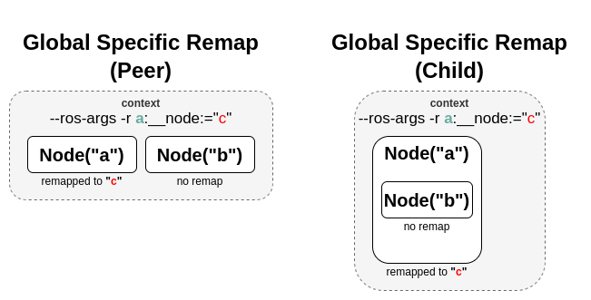

You're reading the documentation for an older, but still supported, version of ROS 2. For information on the latest version, please have a look at Kilted.
Controller Manager
Controller Manager is the main component in the ros2_control framework. It manages lifecycle of controllers, access to the hardware interfaces and offers services to the ROS-world.
Determinism
For best performance when controlling hardware you want the controller manager to have as little jitter as possible in the main control loop.
Independent of the kernel installed, the main thread of Controller Manager attempts to
configure SCHED_FIFO with a priority of 50. Read more about the scheduling policies
for example here.
For real-time tasks, a priority range of 0 to 99 is expected, with higher numbers indicating higher priority. By default, users do not have permission to set such high priorities. To give the user such permissions, add a group named realtime and add the user controlling your robot to this group:
$ sudo addgroup realtime
$ sudo usermod -a -G realtime $(whoami)
Afterwards, add the following limits to the realtime group in /etc/security/limits.conf:
@realtime soft rtprio 99
@realtime soft priority 99
@realtime soft memlock unlimited
@realtime hard rtprio 99
@realtime hard priority 99
@realtime hard memlock unlimited
The limits will be applied after you log out and in again.
You can run ros2_control with real-time requirements also from a docker container. Pass the following capability options to allow the container to set the thread priority and lock memory, e.g.,
$ docker run -it \
--cap-add=sys_nice \
--ulimit rtprio=99 \
--ulimit memlock=-1 \
--rm --net host <IMAGE>
For more information, see the Docker engine documentation about resource_constraints and linux capabilities.
The normal linux kernel is optimized for computational throughput and therefore is not well suited for hardware control. Alternatives to the standard kernel include
Real-time Ubuntu on Ubuntu (also for RaspberryPi)
linux-image-rt-amd64 or linux-image-rt-arm64 on Debian for 64-bit PCs
lowlatency kernel (
sudo apt install linux-lowlatency) on any Ubuntu
Though installing a realtime-kernel will definitely get the best results when it comes to low jitter, using a lowlatency kernel can improve things a lot with being really easy to install.
Subscribers
- ~/robot_description [std_msgs::msg::String]
String with the URDF xml, e.g., from
robot_state_publisher.
Note
Typically one would remap the topic to /robot_description, which is the default setup with robot_state_publisher. An example for a python launchfile is
control_node = Node(
package="controller_manager",
executable="ros2_control_node",
parameters=[robot_controllers],
output="both",
remappings=[
("~/robot_description", "/robot_description"),
],
)
Parameters
- hardware_components_initial_state
Map of parameters for controlled lifecycle management of hardware components. The names of the components are defined as attribute of
<ros2_control>-tag inrobot_description. Hardware components found inrobot_description, but without explicit state definition will be immediately activated. Detailed explanation of each parameter is given below. The full structure of the map is given in the following example:
hardware_components_initial_state:
unconfigured:
- "arm1"
- "arm2"
inactive:
- "base3"
- hardware_components_initial_state.unconfigured (optional; list<string>; default: empty)
Defines which hardware components will be only loaded immediately when controller manager is started.
- hardware_components_initial_state.inactive (optional; list<string>; default: empty)
Defines which hardware components will be configured immediately when controller manager is started.
Note
Passing the robot description parameter directly to the control_manager node is deprecated. Use ~/robot_description topic from robot_state_publisher instead.
- robot_description (optional; string; deprecated)
String with the URDF string as robot description. This is usually result of the parsed description files by
xacrocommand.- update_rate (mandatory; double)
The frequency of controller manager’s real-time update loop. This loop reads states from hardware, updates controller and writes commands to hardware.
- <controller_name>.type
Name of a plugin exported using
pluginlibfor a controller. This is a class from which controller’s instance with name “controller_name” is created.
Helper scripts
There are two scripts to interact with controller manager from launch files:
spawner- loads, configures and start a controller on startup.
unspawner- stops and unloads a controller.
hardware_spawner- activates and configures a hardware component.
spawner
$ ros2 run controller_manager spawner -h
usage: spawner [-h] [-c CONTROLLER_MANAGER] [-p PARAM_FILE] [-n NAMESPACE] [--load-only] [--stopped] [--inactive] [-t CONTROLLER_TYPE] [-u]
[--controller-manager-timeout CONTROLLER_MANAGER_TIMEOUT] [--switch-timeout SWITCH_TIMEOUT]
[--service-call-timeout SERVICE_CALL_TIMEOUT] [--activate-as-group]
controller_names [controller_names ...]
positional arguments:
controller_names List of controllers
options:
-h, --help show this help message and exit
-c CONTROLLER_MANAGER, --controller-manager CONTROLLER_MANAGER
Name of the controller manager ROS node
-p PARAM_FILE, --param-file PARAM_FILE
Controller param file to be loaded into controller node before configure. Pass multiple times to load different files for different controllers or to override the parameters of the same controller.
-n NAMESPACE, --namespace NAMESPACE
Namespace for the controller
--load-only Only load the controller and leave unconfigured.
--stopped Load and configure the controller, however do not activate them
--inactive Load and configure the controller, however do not activate them
-t CONTROLLER_TYPE, --controller-type CONTROLLER_TYPE
If not provided it should exist in the controller manager namespace
-u, --unload-on-kill Wait until this application is interrupted and unload controller
--controller-manager-timeout CONTROLLER_MANAGER_TIMEOUT
Time to wait for the controller manager service to be available
--service-call-timeout SERVICE_CALL_TIMEOUT
Time to wait for the service response from the controller manager
--switch-timeout SWITCH_TIMEOUT
Time to wait for a successful state switch of controllers. Useful when switching cannot be performed immediately, e.g.,
paused simulations at startup
--activate-as-group Activates all the parsed controllers list together instead of one by one. Useful for activating all chainable controllers
altogether
The parsed controller config file can follow the same conventions as the typical ROS 2 parameter file format. Now, the spawner can handle config files with wildcard entries and also the controller name in the absolute namespace. See the following examples on the config files:
/**: ros__parameters: type: joint_trajectory_controller/JointTrajectoryController command_interfaces: - position ..... position_trajectory_controller_joint1: ros__parameters: joints: - joint1 position_trajectory_controller_joint2: ros__parameters: joints: - joint2/**/position_trajectory_controller: ros__parameters: type: joint_trajectory_controller/JointTrajectoryController joints: - joint1 - joint2 command_interfaces: - position ...../position_trajectory_controller: ros__parameters: type: joint_trajectory_controller/JointTrajectoryController joints: - joint1 - joint2 command_interfaces: - position .....position_trajectory_controller: ros__parameters: type: joint_trajectory_controller/JointTrajectoryController joints: - joint1 - joint2 command_interfaces: - position ...../rrbot_1/position_trajectory_controller: ros__parameters: type: joint_trajectory_controller/JointTrajectoryController joints: - joint1 - joint2 command_interfaces: - position .....
unspawner
$ ros2 run controller_manager unspawner -h
usage: unspawner [-h] [-c CONTROLLER_MANAGER] [--switch-timeout SWITCH_TIMEOUT] controller_names [controller_names ...]
positional arguments:
controller_names Name of the controller
options:
-h, --help show this help message and exit
-c CONTROLLER_MANAGER, --controller-manager CONTROLLER_MANAGER
Name of the controller manager ROS node
--switch-timeout SWITCH_TIMEOUT
Time to wait for a successful state switch of controllers. Useful if controllers cannot be switched immediately, e.g., paused
simulations at startup
hardware_spawner
$ ros2 run controller_manager hardware_spawner -h
usage: hardware_spawner [-h] [-c CONTROLLER_MANAGER] [--controller-manager-timeout CONTROLLER_MANAGER_TIMEOUT]
(--activate | --configure)
hardware_component_names [hardware_component_names ...]
positional arguments:
hardware_component_names
The name of the hardware components which should be activated.
options:
-h, --help show this help message and exit
-c CONTROLLER_MANAGER, --controller-manager CONTROLLER_MANAGER
Name of the controller manager ROS node
--controller-manager-timeout CONTROLLER_MANAGER_TIMEOUT
Time to wait for the controller manager
--activate Activates the given components. Note: Components are by default configured before activated.
--configure Configures the given components.
rqt_controller_manager
A GUI tool to interact with the controller manager services to be able to switch the lifecycle states of the controllers as well as the hardware components.

It can be launched independently using the following command or as rqt plugin.
ros2 run rqt_controller_manager rqt_controller_manager
* Double-click on a controller or hardware component to show the additional info.
* Right-click on a controller or hardware component to show a context menu with options for lifecycle management.
Using the Controller Manager in a Process
The ControllerManager may also be instantiated in a process as a class, but proper care must be taken when doing so.
The reason for this is because the ControllerManager class inherits from rclcpp::Node.
If there is more than one Node in the process, global node name remap rules can forcibly change the ControllerManager's node name as well, leading to duplicate node names.
This occurs whether the Nodes are siblings or exist in a hierarchy.

The workaround for this is to specify another node name remap rule in the NodeOptions passed to the ControllerManager node (causing it to ignore the global rule), or ensure that any remap rules are targeted to specific nodes.

auto options = controller_manager::get_cm_node_options();
options.arguments({
"--ros-args",
"--remap", "_target_node_name:__node:=dst_node_name",
"--log-level", "info"});
auto cm = std::make_shared<controller_manager::ControllerManager>(
executor, "_target_node_name", "some_optional_namespace", options);
Launching controller_manager with ros2_control_node
The controller_manager can be launched with the ros2_control_node executable. The following example shows how to launch the controller_manager with the ros2_control_node executable:
control_node = Node(
package="controller_manager",
executable="ros2_control_node",
parameters=[robot_controllers],
output="both",
)
The ros2_control_node executable uses the following parameters from the controller_manager node:
- lock_memory (optional; bool; default: false for a non-realtime kernel, true for a realtime kernel)
Locks the memory of the
controller_managernode at startup to physical RAM in order to avoid page faults and to prevent the node from being swapped out to disk. Find more information about the setup for memory locking in the following link : How to set ulimit values The following command can be used to set the memory locking limit temporarily :ulimit -l unlimited.- cpu_affinity (optional; int (or) int_array;)
Sets the CPU affinity of the
controller_managernode to the specified CPU core. If it is an integer, the node’s affinity will be set to the specified CPU core. If it is an array of integers, the node’s affinity will be set to the specified set of CPU cores.- thread_priority (optional; int; default: 50)
Sets the thread priority of the
controller_managernode to the specified value. The value must be between 0 and 99.- use_sim_time (optional; bool; default: false)
Enables the use of simulation time in the
controller_managernode.
Concepts
Restarting all controllers
The simplest way to restart all controllers is by using switch_controllers services or CLI and adding all controllers to start and stop lists.
Note that not all controllers have to be restarted, e.g., broadcasters.
Restarting hardware
If hardware gets restarted then you should go through its lifecycle again.
This can be simply achieved by returning ERROR from write and read methods of interface implementation.
NOT IMPLEMENTED YET - PLEASE STOP/RESTART ALL CONTROLLERS MANUALLY FOR NOW The controller manager detects that and stops all the controllers that are commanding that hardware and restarts broadcasters that are listening to its states.
Factors that affect Determinism
When run under the conditions determined in the above section, the determinism is assured up to the limitations of the hardware and the real-time kernel. However, there are some situations that can affect determinism:
When a controller fails to activate, the controller_manager will call the methods
prepare_command_mode_switchandperform_command_mode_switchto stop the started interfaces. These calls can cause jitter in the main control loop.